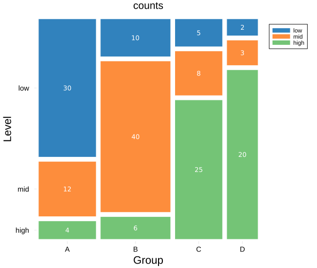
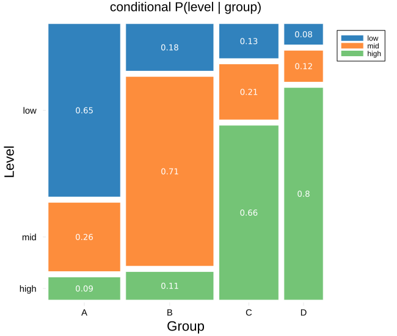
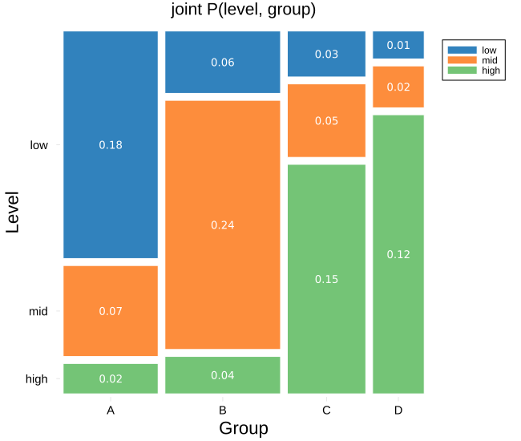
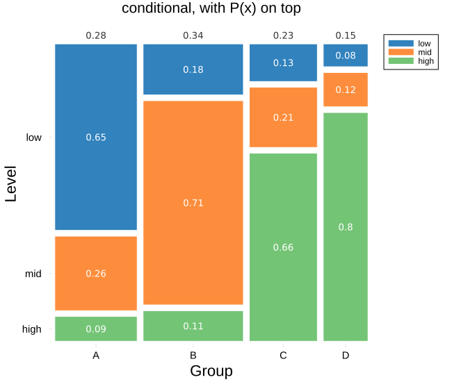
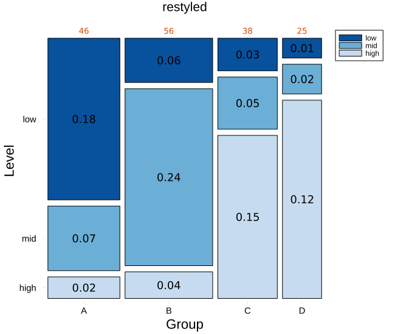
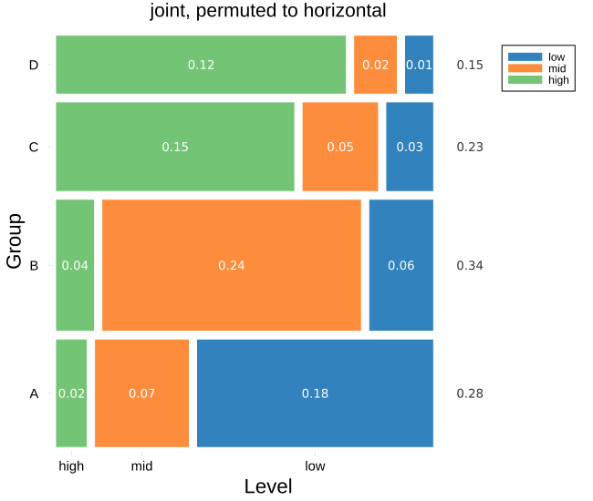
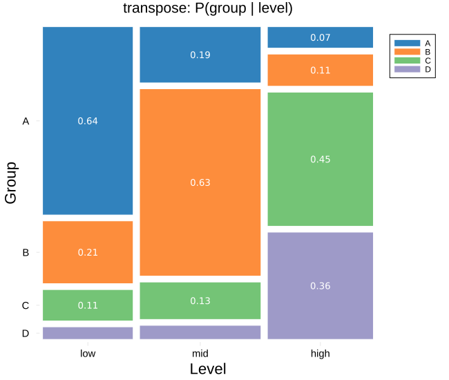

Mosaic plot
The mosaic plot draws a contingency table as tiles. The width of each column is the share of the whole table that column holds, the marginal P(x), and the height of each tile within a column is the conditional P(y|x) — so the area of a tile is the joint probability of its cell, and the marginal and the conditional are both read from the one picture.
plot_mosaic(counts; rownames = ..., colnames = ..., mode = ..., marginals = ..., kwargs...)It takes a plain contingency table, so it is not tied to any model: any cross tabulation of two categorical variables is drawn the same way, whatever its shape.
Setup
using BigRiverPlots
using PlotsAn example table
Three row categories against four column categories. The columns differ in total, so the mosaic columns come out at noticeably different widths, and each column splits differently between the three rows — which is the structure the plot is there to show.
We print the table and the quantities the three modes will draw, to compare against the tiles.
counts = Float64[30 10 5 2
12 40 8 3
4 6 25 20]
rn = ["low", "mid", "high"]
cn = ["A", "B", "C", "D"]
total = sum(counts)
println("column marginals P(x): ", round.(vec(sum(counts, dims = 1)) ./ total, digits = 3))
println("P(level | A) : ", round.(counts[:, 1] ./ sum(counts[:, 1]), digits = 3))
println("joint of the corner : ", round(counts[1, 1] / total, digits = 3), " (low, A)")column marginals P(x): [0.279, 0.339, 0.23, 0.152]
P(level | A) : [0.652, 0.261, 0.087]
joint of the corner : 0.182 (low, A)The default plot
With nothing but the table and its names, we get one column per group at a width set by its total, split into the three levels, each tile labelled with its raw count. This is mode = :count, the default.
plot_mosaic(counts;
rownames = rn, colnames = cn,
xlabel = "Group", ylabel = "Level",
title = "counts")
Modifying the plot
The geometry never changes — the tiles sit where they sit whatever we ask for. Two independent choices change what is written: mode sets the number in each tile, and marginals sets the strip along the top. On top of that are the usual styling knobs and the standard Plots vocabulary.
The three modes
mode chooses what each tile is labelled with. All three share the same geometry, so switching between them relabels the tiles without moving them.
:count— the raw count:conditional— P(y|x), the tile's share of its own column, so each column's labels sum to one:total— the joint probability, the tile's share of the whole table, so all twelve labels sum to one
Here is the conditional view: each column now reads as how that group splits across the three levels.
plot_mosaic(counts;
rownames = rn, colnames = cn,
mode = :conditional,
xlabel = "Group", ylabel = "Level",
title = "conditional P(level | group)")
And the joint view, each tile as its share of the whole table:
plot_mosaic(counts;
rownames = rn, colnames = cn,
mode = :total,
xlabel = "Group", ylabel = "Level",
title = "joint P(level, group)")
The marginal strip
marginals writes one value per column along the top, independent of the mode. :count shows the column totals, :probability the marginal P(x). Leaving it :none draws nothing above the tiles.
Below, the conditional tiles carry P(y|x) while the strip carries P(x) — so the figure shows the marginal and the conditional at once, and their product is the joint area of each tile.
plot_mosaic(counts;
rownames = rn, colnames = cn,
mode = :conditional, marginals = :probability,
xlabel = "Group", ylabel = "Level",
title = "conditional, with P(x) on top")
The gaps, and the colours
xpad sets the gap between columns and ypad the gap between the stacked tiles, so the two directions are controlled separately. marginaloffset sets how far the top strip sits above the bars. One colour per row is passed with mosaiccolors, and tilelinecolor, labelcolor and labelsize style the tiles and their numbers.
labelmintile is the size below which a tile is left unlabelled, since a number will not fit — lower it to label smaller tiles, raise it to blank more of them.
plot_mosaic(counts;
rownames = rn, colnames = cn,
mode = :total, marginals = :count,
mosaiccolors = ["#08519c", "#6baed6", "#c6dbef"],
tilelinecolor = :black,
labelcolor = :black,
labelsize = 12,
marginalcolor = "#d94801",
xpad = 0.02,
ypad = 0.025,
xlabel = "Group", ylabel = "Level",
title = "restyled")
Horizontal
Passing permute = (:x, :y) swaps the axes, turning the columns into horizontal bars. Because the top strip then rides along the right, marginaloffset is bumped to push the marginals clear of the bar ends.
plot_mosaic(counts;
rownames = rn, colnames = cn,
mode = :total, marginals = :probability,
permute = (:x, :y),
marginaloffset = 0.10,
legend = :outertopright,
xlabel = "Group", ylabel = "Level",
title = "joint, permuted to horizontal")
Conditioning the other way
A mosaic of the transposed table conditions the other way round. Here the columns become the levels, and the split within each is P(group | level) — the same data, read as which groups make up each level rather than which levels make up each group. This is often the more useful of the two directions, and no recipe change is needed: the geometry is simply recomputed from the transpose.
plot_mosaic(permutedims(counts);
rownames = cn, colnames = rn,
mode = :conditional,
xlabel = "Level", ylabel = "Group",
title = "transpose: P(group | level)")